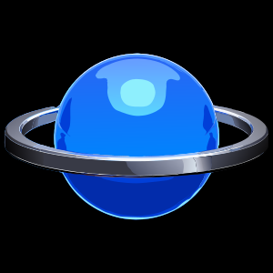

NEON SATURN
Sega Saturn emulator for Android, powered by Ymir
Want to help test NEON SATURN on your Android device?
NEON SATURN is a mobile-friendly Sega Saturn emulator for Android built on the Ymir emulation core. Point it at a folder of disc images to build a library with downloadable cover art, then play fullscreen with Saturn-style touch controls or a physical gamepad.
No games, BIOS files, or commercial artwork are included. You must provide your own legally obtained Saturn BIOS (IPL) ROM and game files.
Key Features
- MAME CHD, BIN+CUE, IMG+CCD, MDF+MDS, and ISO disc image support
- Guided setup for importing the BIOS and choosing a games folder
- Game library with a list view and two cover-flow views, NA boxes and Japanese jewel cases
- Downloadable cover art, cached on device
- Saturn-style on-screen controls with a fully repositionable layout
- Physical controller and keyboard input
- Rewind and fast-forward, plus save states
- Aspect ratio, texture filtering, and 6x xBRZ upscaling options
- Deinterlaced rendering and transparent mesh polygons
- Optional low-level CD block emulation
- Light and dark themes
Device Requirements
- Android 9.0 or newer (API 28+)
- 64-bit ARM (arm64-v8a) device
- OpenGL ES 3.1-capable GPU for the xBRZ upscaling filter
- Your own legally obtained Saturn BIOS (IPL) ROM
- Your own legally obtained game files
Getting Started
- Import your Saturn BIOS (IPL) ROM when the setup wizard asks for it.
- Choose the folder holding your disc images.
- Tap a game in the library to stage and launch it.
- Open Settings from the header to adjust aspect ratio, filtering, or the touch control layout.
- Press Back, or Select on a gamepad, for the in-game menu to save or load a state.
A Note on Upscaling
The upscaling filter is an edge-aware smoothing pass applied to the finished frame. It sharpens 2D sprites and backgrounds noticeably, but it cannot add 3D detail — the emulation core renders at Saturn-native resolution. Raising the internal resolution would require a hardware renderer, which does not exist in the core yet.
License & Credits
NEON SATURN is an Android port of Ymir, copyright © StrikerX3, and is distributed under the GNU General Public License v3.0. It is provided without warranty, as described by the license. The 6x xBRZ upscaling shader is derived from Kronos and Yabause and is used under GPL-2.0-or-later.